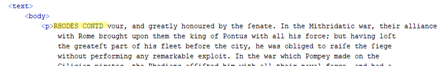

Prepare the first entry in the section for inclusion.
Sections are defined by pages, not entries. Most
sections start and end in the middle of an entry. To capture that text at the start
of the new section, we have to add something to the file that can trick Python into
thinking it recognizes an entry term, so it will create a new file for the leftover
material. That material can then be added to the rest of the entry at the end of the
previous section.
Identify the entry term for the initial text in the section.
If the previous section has been converted to entry files, look for the
last entry in that entry-inventory spreadsheet.
If the previous section has not been converted, open the last image file
in the section to find the last entry term.
If the previous section has not been converted, start with the last file
in that section to find the last entry term. You may have to work backward
through multiple files if the last entry was a long one.
When you are certain of the entry term, add it immediately following the
<p> at the beginning of the text, followed by an
abbreviation for "continued": CONTD. Use all capital
letters. Do not add any punctuation after the term and follow it with a
space.
Figure: Title added to first document in a new section.

Note:Python will recognize your addition as an entry term
and create a new file. After the conversion, the text in the new file is
added to the rest of the entry in the previous section, to complete it. The
new file can then safely be deleted.